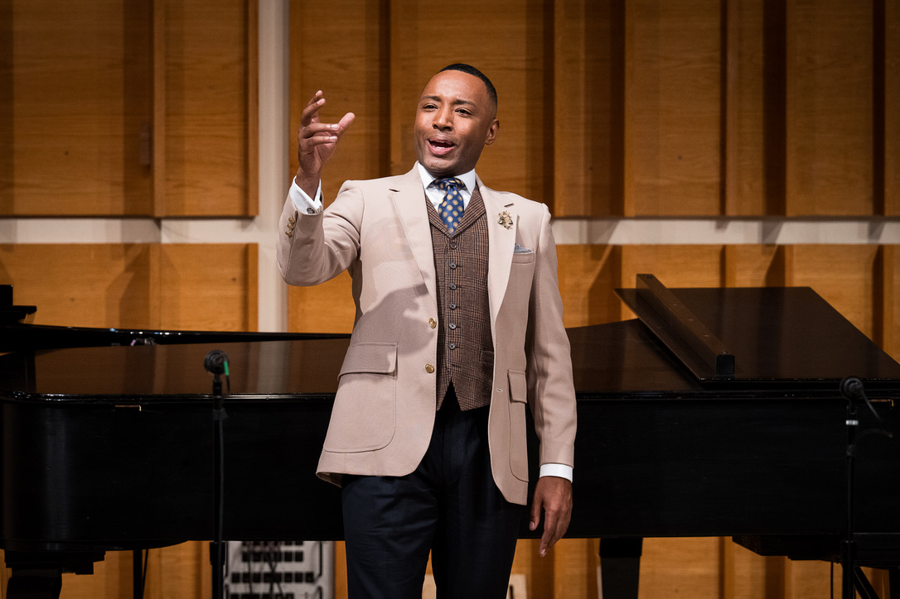
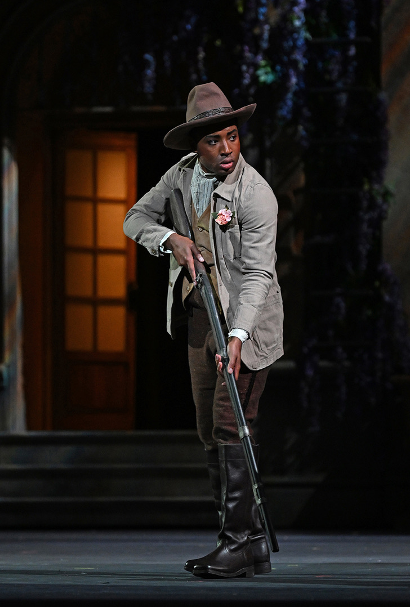

The artist
Praised for his commanding presence, vocal warmth, and expressive depth, Joseph Parrish brings an expansive dramatic imagination to opera, concert, and song.
Read the biography“Commanding presence, vocal warmth, and expressive depth.”
Critical acclaim
Selected appearances
On stage
Opera
Belcore · L’elisir d’amore
Opera Saratoga
Concert
Beethoven · Symphony No. 9
Anchorage Symphony
Recital
A Love Letter to the Americas
Cliburn / Kimbell
Featured performance


Featured project
A Love Letter to the Americas
An identity-driven recital project connecting the music, stories, and cultural lineages of North and South America.
Explore the project